Chris Coleman
I'm a student interested in programming and software development. I enjoy building projects, learning new technolgies, and solving problems through code. My goal is to pursue a career in software developmen, and this website highlights some of the projects and skills I've developed along the way.
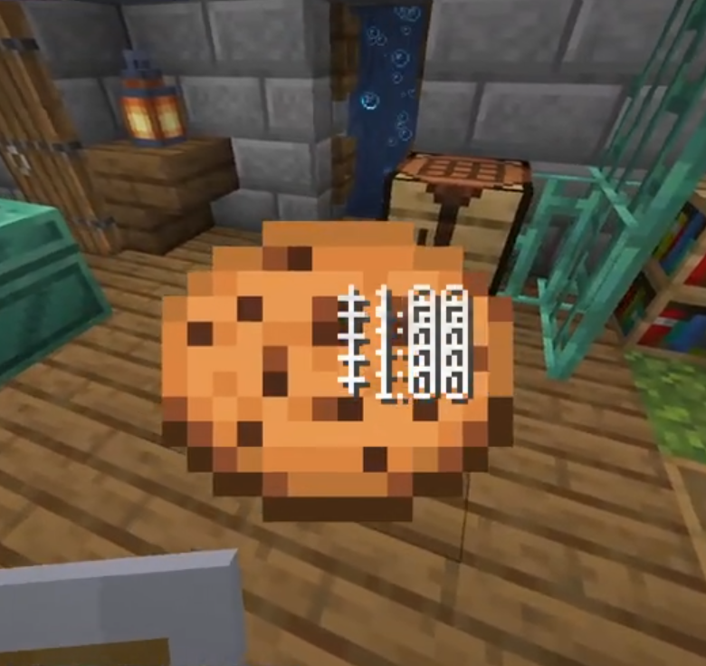
Cookie Clicker in MinecraftThis is a Minecraft mod made in Java that makes use of object oriented programming
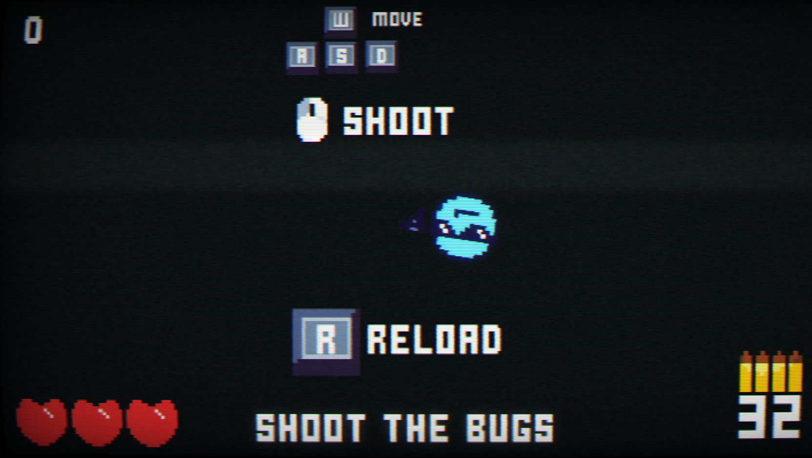
Bug BlasterThis is the first game I made in Godot, made for the 2024 GMTK Game Jam
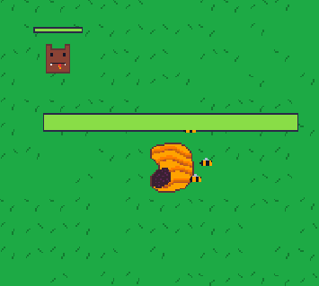
Honey ForgeThis is a Godot game made for the Godot Wild Jam #84, and is my most advanced game making use of custom resources
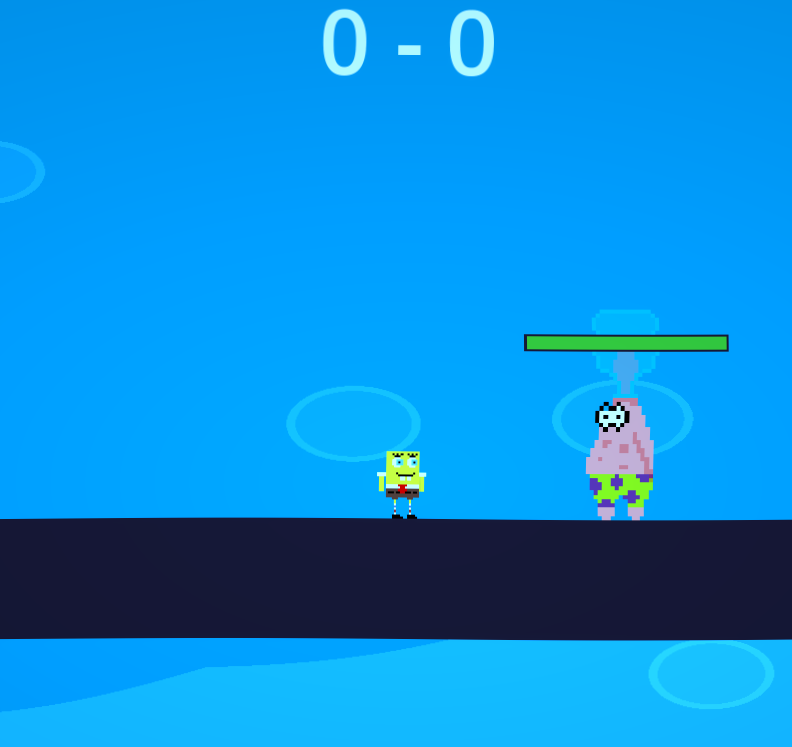
Spongefighter 2This is a Godot game made for the 2025 Congressional App Challenge
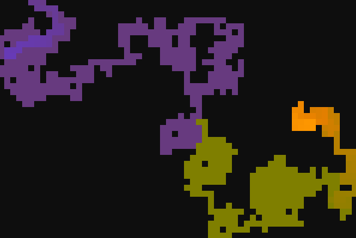
Random WalkerThis is a visual program made in p5.js that showcases a simple random walking algorithm
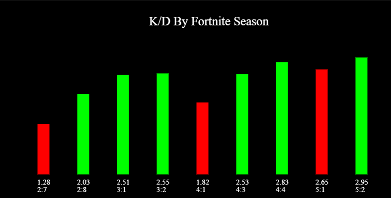
Fortnite Stats GraphThis is my favorite visual program made in p5.js that displays graphs of my Fortnite statistics, try clicking on the screen
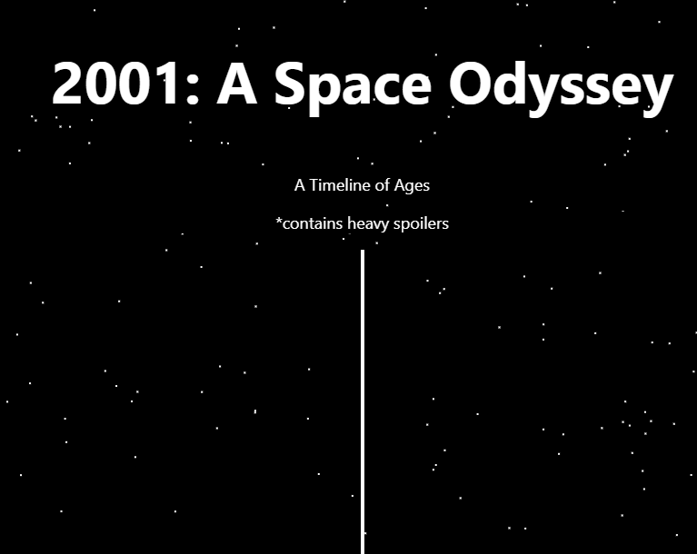
2001: A Space OdysseyThis is a website made for my English class about the book 2001: A Space Odyssey that uses HTML, CSS, and JS
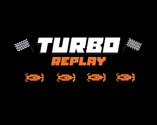
Turbo ReplayThis is a game made in Godot for the 2025 GMTK Game Jam that features an infinite procedurally generating racetrack
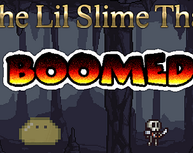
The Lil Slime That BoomedThis is a Godot game made for the Pizza Jam #14, is is probably my most fun game to date
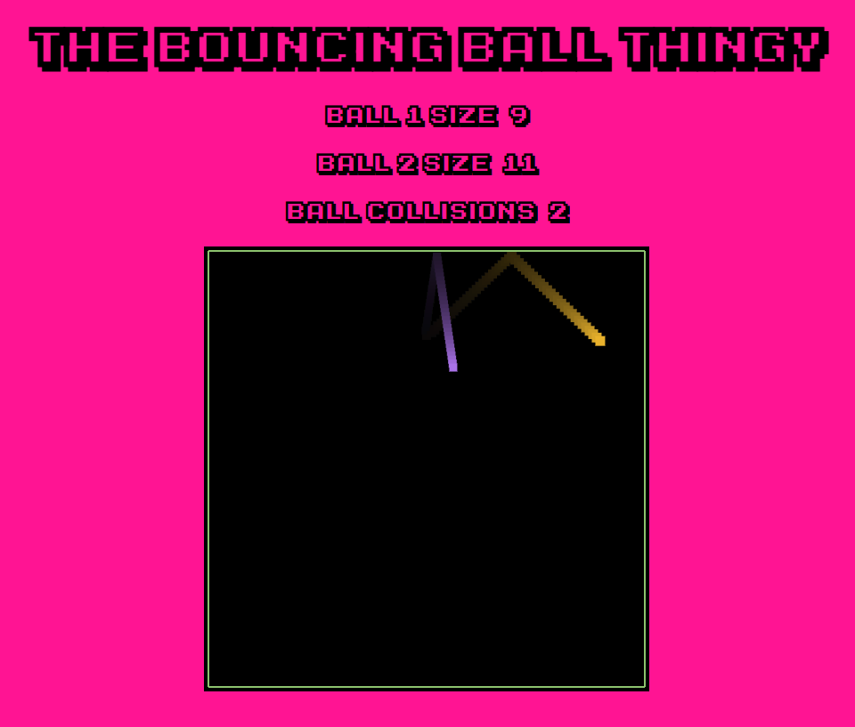
The Bouncing Ball GameThis is a visual program made for a school hackathon in 2024 using p5.js and p5play
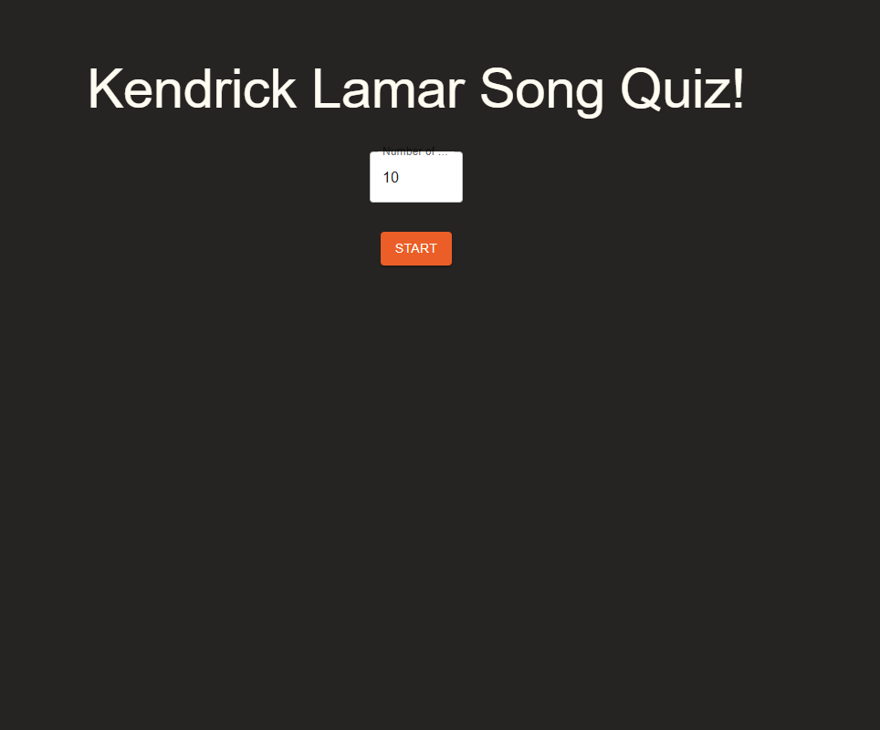
Kendrick Lamar Song QuizThis is a React web application that asks the user to guess the Kendrick Lamar song from an audio snippet
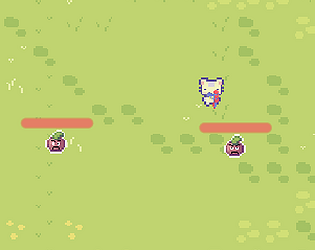
Plant RevivalThis is a Godot game made for my school hackathon in 2025, and it showcases how well of a game I could make in a very short time span (8 hours)
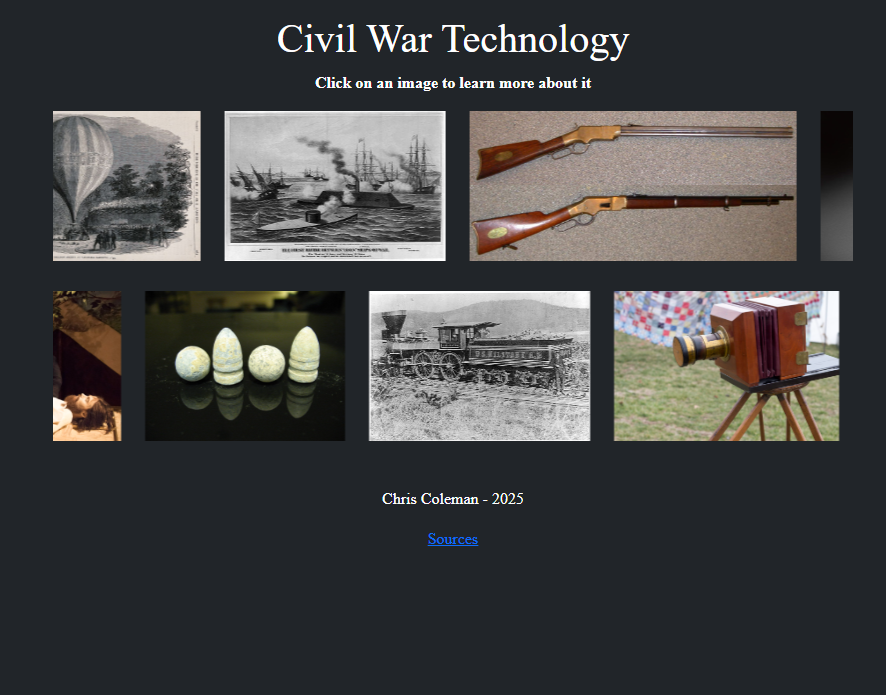
Civil War TechnologiesThis is a bootstrap website made for my history class in 2025 that showcases Civil War era technology
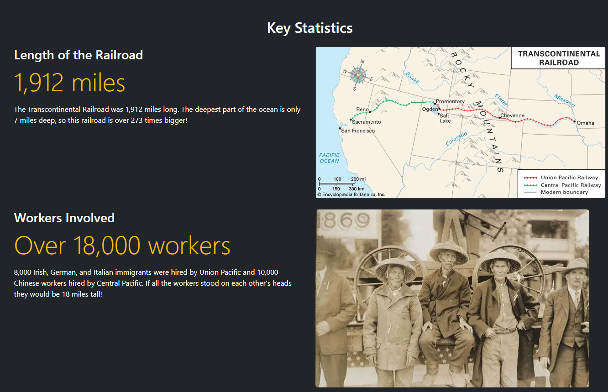
Transcontinental RailroadThis is a bootstrap website made for my history class in 2025 about the Transcontinental Railroad
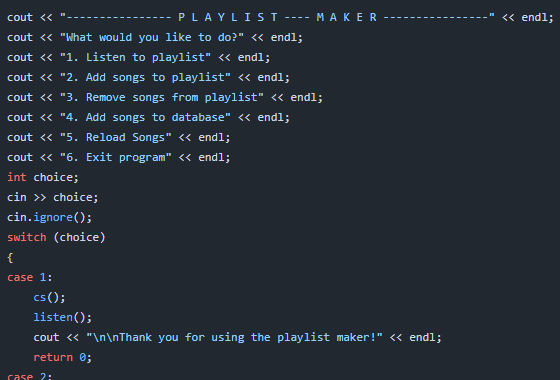
C++ Playlist MakerThis is a C++ program that allows the user to make a playlist of YouTube links and plays the songs by opening the user's browser and shuffling through a list of YouTube links